Personalizar Iconos,asi que dejo varios
Papirus
Sirve para cualquier escritorio
Qogir
Sirve para cualquier escritorio
WhiteSur
Sirve para cualquier escritorio
Sirve para cualquier escritorio
Sirve para cualquier escritorio
Sirve para cualquier escritorio
Sirve para KDE y Gnome
Sirve para KDE y Gnome
Sirve para KDE y Gnome
1. Descargamos el archivo
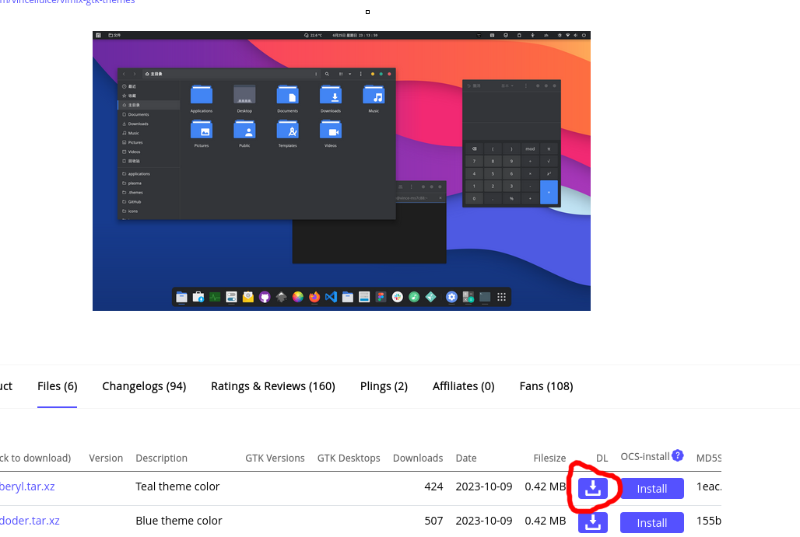2. Vamos al explorador de archivos y lo extraemos
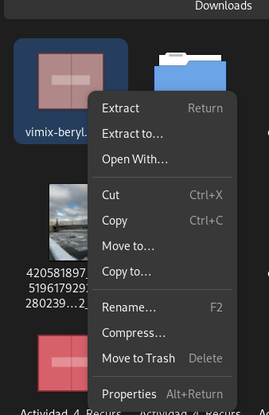3. Copiamos las carpetas extraídas,comprobar si dentro incluye directamente los archivos necesarios
4. ABrimos el explorador de archivos como usuario root o superusuario
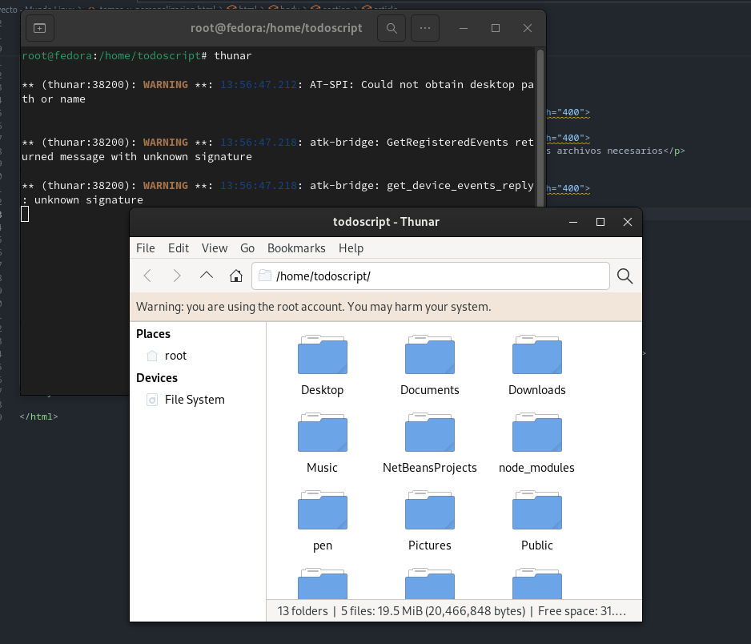5. Esas carpetas extraídas las movemos/copiamos
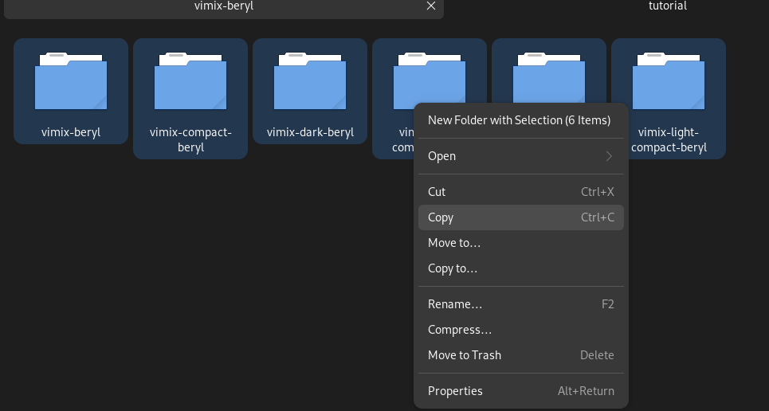6. Y lo copiamos/movemos al directorio 'usr/share'/icons'
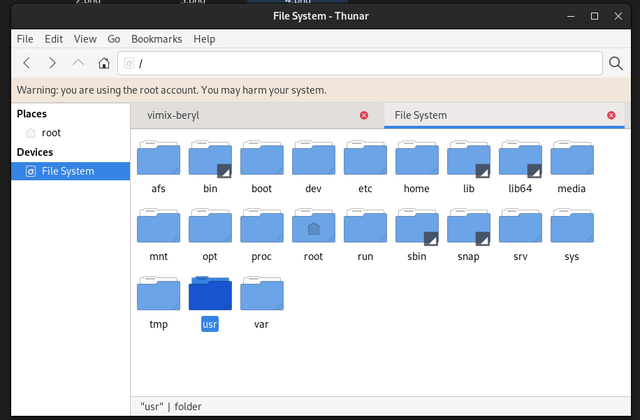 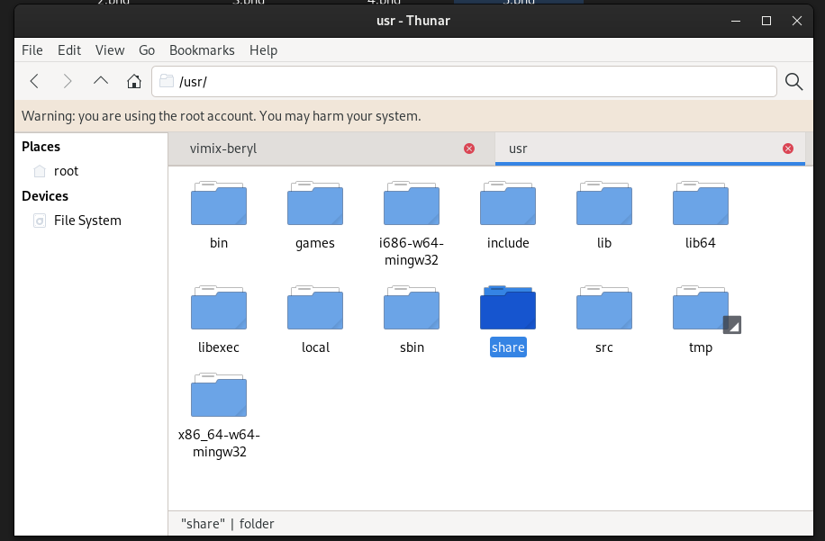 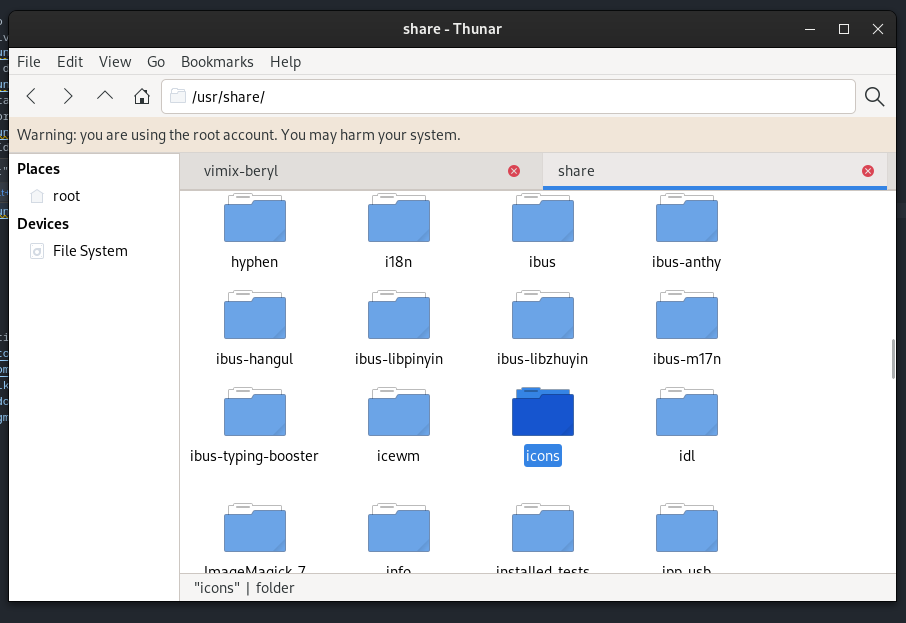 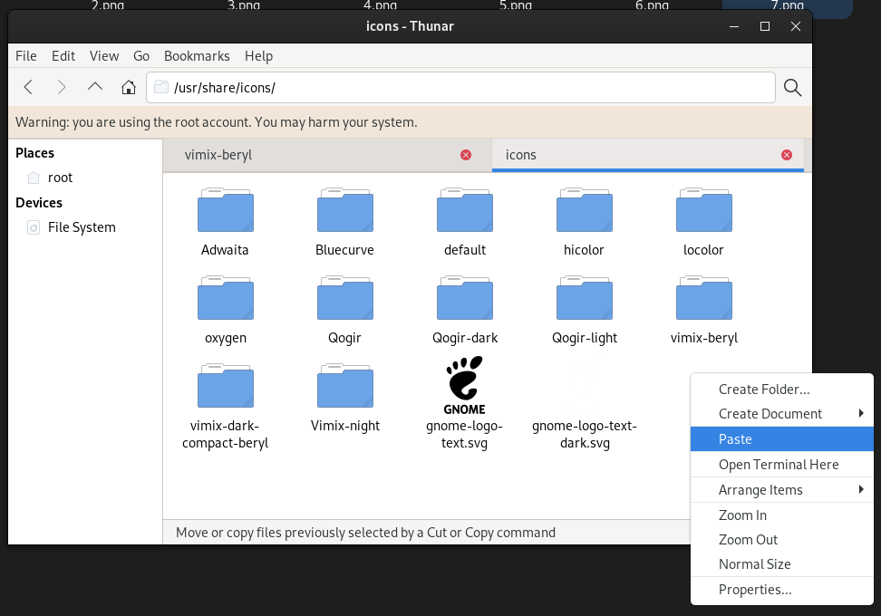Y ya lo tenemos en el directorio indicado,ahora instalas 'tweaks' si tienes Gnome,pero si tienes KDE Plasma o XFCE te vas a ajustes -> apariencia-> iconos y ahi lo cambias
Con los temas el proceso se repite pero moviendo las carpetas al directorio 'usr/share'themes/'
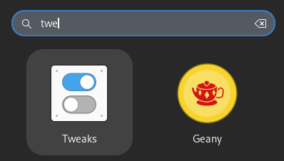Como puedes ver tengo el programa de 'tweaks',si tienes GNOME pero no dispones del programa,lo instalar con 'apt install gnome-tweaks' si tienes una basada de Debian/Ubuntu, 'dnf install tweaks' si tienens una basada en Red Hat o Fedora como yo o 'pacman -S gnome-tweaks' si tienes una basada en Arch como Manjaro o Endevour.
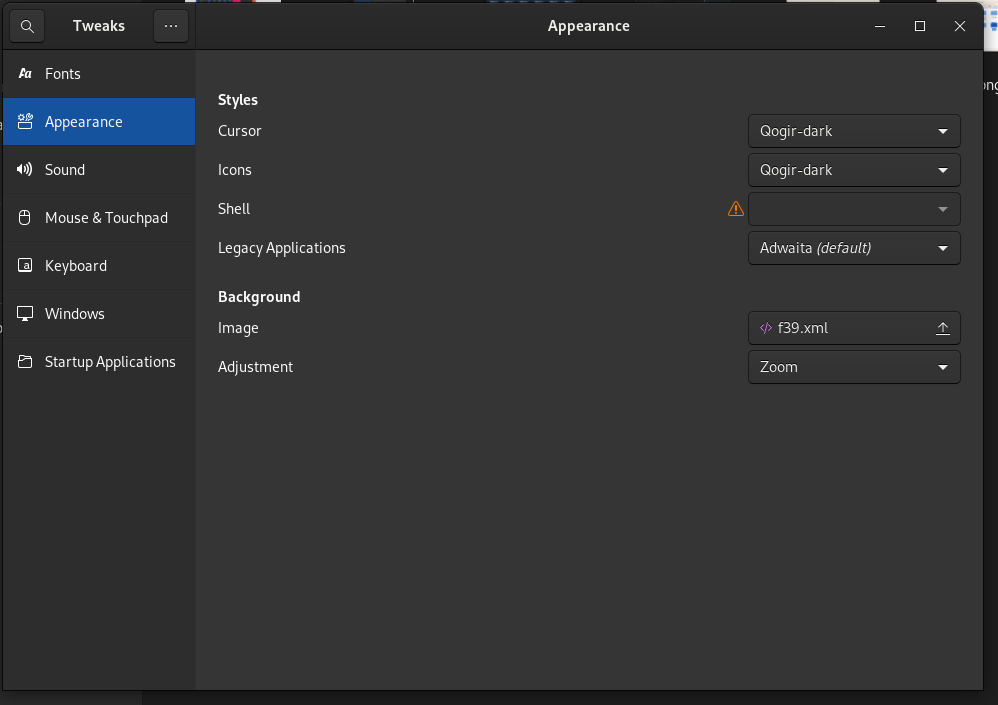Como puedes observar ya tengo el tema instalado
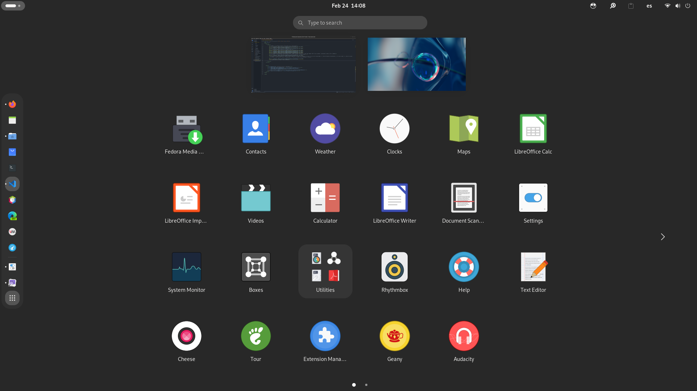